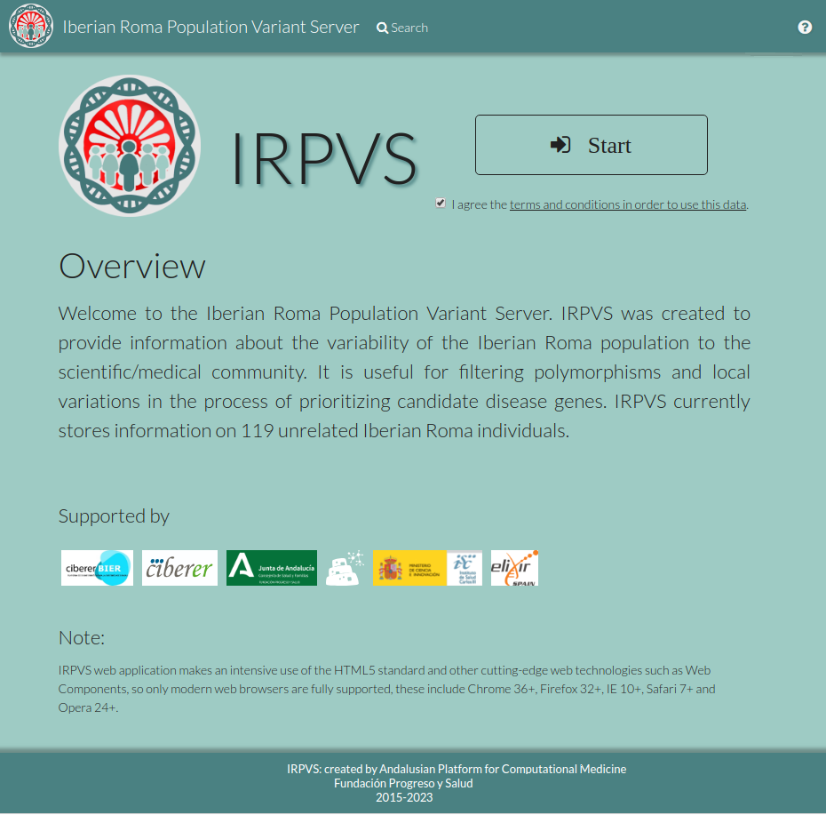
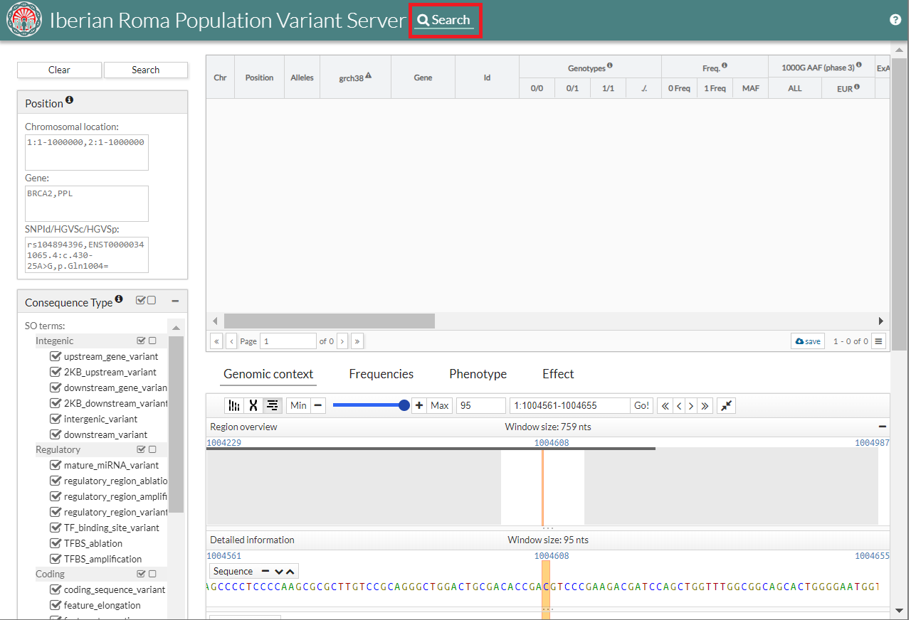
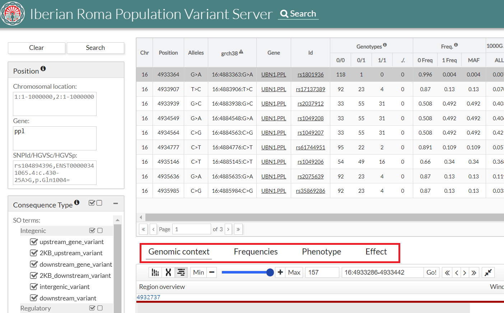
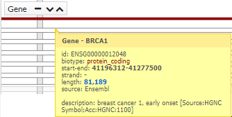
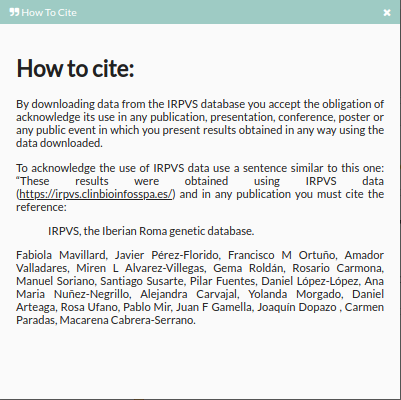
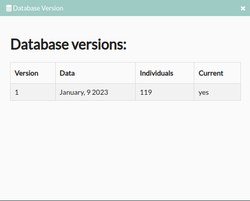

<link rel="import" href="bower_components/polymer/polymer.html">
<link rel="import" href="bower_components/iron-flex-layout/iron-flex-layout-classes.html">

<script src="bower_components/stevia-elements/src/manager/stevia-manager.js"></script>
<script src="bower_components/stevia-elements/src/utils/utils.js"></script>
<link rel="import" href="bower_components/stevia-elements/src/stv-dialog/stv-dialog.html">


<link rel="import" href="bower_components/stevia-elements/src/stv-header.html">
<link rel="import" href="bower_components/stevia-elements/src/stv-application-behavior.html">
<link rel="import" href="bower_components/stevia-elements/src/stv-footer.html">
<link rel="import" href="bower_components/stevia-elements/src/dropdown/stv-dropdown.html">
<link rel="import" href="bower_components/stevia-elements/src/stv-select.html">
<!--<link rel="import" href="bower_components/stevia-elements/src/stv-feedback.html">-->
<link rel="import" href="bower_components/stevia-elements/src/stv-panel.html">
<link rel="import" href="bower_components/stevia-elements/src/table/stv-table.html">
<link rel="import" href="bower_components/stevia-elements/src/validator/stv-validator.html">
<link rel="import" href="bower_components/stevia-elements/src/job/stv-job-browser.html">
<link rel="import" href="bower_components/stevia-elements/src/file/stv-file-browser.html">
<link rel="import" href="bower_components/stevia-elements/src/variant/stv-variant-frequencies.html">
<link rel="import" href="bower_components/stevia-elements/src/variant/stv-variant-phenotype.html">
<link rel="import" href="bower_components/stevia-elements/src/variant/stv-variant-effect.html">

<script src="bower_components/stevia-elements/src/validator/bed-validator.js"></script>
<script src="src/FilterHistory.js"></script>

<script src="src/manager/csvs-manager.js"></script>
<link rel="import" href="src/csvs-home.html">
<link rel="import" href="src/csvs-search-element.html">
<link rel="import" href="src/csvs-feedback.html">
<link rel="import" href="src/csvs-stats-element.html">
<link rel="import" href="src/csvs-downloads-element.html">
<link rel="import" href="src/csvs-annotation-form.html">
<link rel="import" href="src/csvs-annotation-result.html">
<link rel="import" href="src/csvs-saturation-element.html">
<link rel="import" href="src/csvs-how-to-cite.html">

<dom-module id="csvs-documentation-data">
    <style is="custom-style"
           include="iron-flex iron-flex-reverse iron-flex-alignment iron-flex-factors iron-positioning">
        :host {
            display: block;
            position: relative;
            cursor: default;
            font-size: 13px;
            height: 100%;
            background-color: var(--default-primary-color);
        }

        .content {
            position: absolute;
            width: 100%;
            top: 60px;
        }

        @media (max-width: 1100px) {
            .option-text {
                display: none;
            }
        }

        stv-header {
            position: absolute;
            top: 0;
        }

        stv-footer {
            position: absolute;
            bottom: 0;
            height: auto;
            padding-bottom: 10px;
        }

        .main {
            /* width: 75%;*/
            /* max-width: 780px;*/
            margin-left: auto;
            margin-right: auto;

            background-color: white;
            margin-right: auto;
            margin-left: auto;
            border-radius: 5px;
            padding: 1.5em;
            width: 80%;
            /*max-width: 850px;*/
            margin-top: 7px;
            height: 100%;
            overflow-y: auto;
            overflow-x: auto;

            font-size: 16px;

        }

        .paragraph {
            text-align: justify;
            padding: 10px 0;
        }

        .paragraph2 {
            font-size: 14px;
            padding: 0 0 10px 0;
        }

        .title {
            font-size: 40px;
            padding-top: 30px;
            padding-bottom: 10px;
        }

        .title2 {
            padding-top: 20px;
            padding-bottom: 10px;
        }

        .b {
            font-weight: 400;
        }

        a, a:visited {
            text-decoration: none;
        }

        .megabutton {
            font-weight: 400;
            margin: 20px;
            padding: 20px 30px;
            font-size: 26px;
            border-width: 1px;
            border-style: solid;
            border-radius: 5px;
            width: 200px;
            text-align: center;
        }

        .megabutton:hover {
            cursor: pointer;
        }

        .megatitle {
            font-size: 30px;
            padding-top: 10px;
            /*text-shadow: 3px 3px 5px #444;*/
        }

        div.disabled {
            color: #CCC;
            opacity: 0.5;
        }

        OL {
            counter-reset: item;
            padding-left: 10px;
        }

        /* LI { display: block }*/
        .numLi:before {
            content: counters(item, ".") ". ";
            counter-increment: item
        }

        .h1 {
            font-size: 2em;
            font-weight: 600;
        }

        .h2 {
            font-size: 1.5em;
            font-weight: 600;
        }

        .h3 {
            font-size: 1.25em;
            font-weight: 600;
        }

        .h4 {
            font-size: 1em;
            font-weight: 600;
        }
        img {
            max-width: 780px;
        }
    </style>
    <template>
        <stv-header id="stvHeader" user-data="{{userData}}" hide-jbos hide-browse hide-login="true"
                    hide-anonymous="true" hide-request-account="true" hide-signup="true>
            <div class=" icon
        ">
        
        </div>
        <span class="title">{{titleApp}}</span>
        <span class="description"></span>

        <div id="menu" class="menu horizontal layout center flex">

        </div>

        <stv-dropdown dark class="helpmenu">
            <div data-button><i class="fa fa-question-circle"></i></div>
            <ul data-menu>
                <a href="https://github.com/babelomics/CSVS/tree/gpvs" target="_blank">
                    <li><i class="fa fa-github"></i> &nbsp; Source code</li>
                </a>
            </ul>
        </stv-dropdown>
        </stv-header>
        <div class="content">
            <div class="horizontal layout" style="padding-top: 15px; line-height: 2; font-size: 16px; position: fixed">
                <div class="vertical layout">
                    <stv-form-box>
                        <div class="header horizontal layout flex">
                            <div style="font-size: 16px;">Table of contents</div>
                        </div>
                        <div class="container">
                            <div style="padding-left: 10px; padding-right: 10px">
                                <ol>
                                    <li class="numLi"><a href="#Introduction">Introduction</a>
                                        <ol>
                                            <li class="numLi">
                                                <a href="#GPVSStructure">{{acronym}} structure</a>
                                            </li>
                                        </ol>
                                    </li>
                                    <li><a href="#HomePage">Home Page</a>
                                    </li>
                                    <li class="numLi"><a href="#Search">Search</a>
                                        <ol>
                                            <li class="numLi"><a href="#Filters">Filters</a></li>
                                            <li class="numLi"><a href="#Results">Results</a></li>
                                        </ol>
                                    </li>
                                    <ul>
                                        <li><a href="#Fields">Fields</a></li>
                                        <li><a href="#OtherFeaturesTableResult">Other features table result</a></li>
                                        <li><a href="#ExtraInformation">Extra information</a></li>
                                        <ul>
                                            <li><a href="#GenomicContext">Genomic context</a></li>
                                            <li><a href="#Frequencies">Frequencies</a></li>
                                            <li><a href="#Phenotype">Phenotype</a></li>
                                            <li><a href="#Effect">Effect</a></li>
                                        </ul>
                                    </ul>


                                    <li><a href="#InformationAndContact">Information and contact</a></li>

                                </ol>
                            </div>
                        </div>
                    </stv-form-box>

                </div>
                <div class="main" style="overflow: auto;max-height: 85vh; line-height: 2; padding-right: 50px; padding-left: 30px;">

                    <div class="h1" id="Introduction">Introduction</div>

                    <div class="paragraph"></div>
                    <div class="paragraph">
                        Welcome to the {{titleApp}}. <strong>{{acronym}}</strong> was created to
                        provide information about the variability of the {{phenotype}} population to the
                        scientific/medical community.
                        It is useful for filtering polymorphisms and local variations in the process of
                        prioritizing candidate disease genes. <strong>{{acronym}}</strong> currently stores information on
                        <strong>109</strong> unrelated {{phenotype}} individuals.
                    </div>
                    <div class="h2" id="GPVSStructure"> {{acronym}} structure</div>
                    <div class="paragraph">{{acronym}} has the following architecture:</div>
                    <div class="paragraph"></div>
                    <div class="paragraph">
                        It consists of a proprietary database where the data of the variants and their associated
                        counts are stored. The vcf or the vcf aggregates coming from different collaborators are
                        entered into the database by a maintainer of the {{acronym}}. A web is used to visualize the
                        variants. The web in addition to providing a graphical interface for displaying variants,
                        enriches the information with annotation from the <a
                            href="https://www.ncbi.nlm.nih.gov/pubmed/22693220" target="_blank">Cellbase Database</a>.

                    </div>
                    <div class="h1" id="HomePage">Home Page</div>

                    <div class="paragraph">
                        To start using {{acronym}} can access the {{acronym}} web on this
                        <a href="http://irpvs.babelomics.org/" target="_blank">http://irpvs.babelomics.org/</a>.
                    </div>
                    <div class="paragraph">
                        
                    </div>
                    <div class="paragraph">
                        On the first page you can see a start button to start using the application (1), a login (2), a principal
                        menu (3) and button "?"(4) for {{acronym}} information.
                    </div>
                    <div class="paragraph">Read and accept "Terms and conditions for the use of the {{acronym}} database"
                    </div>
                    <div class="paragraph">.</div>
                    <div class="paragraph">
                        When the user clicks on "Start"  you must login. After it
                        yow can see the <a href="#search">Search</a> tab.
                    </div>
                    <div class="paragraph">.</div>
                    <div class="paragraph">
                        If you don't have a password, you can request it by clicking "here".
                    </div>
                    <div class="paragraph">
                    <div class="paragraph">

                    <div class="h1" id="Search">Search</div>
                    <div class="paragraph"></div>
                    <div class="paragraph">The {{acronym}} tool provides various search filters (left column).</div>
                    <div class="h2" id="Filters">Filters</div>
                    <div class="paragraph">1. Position:<br>
                        This filters is required and have two possibilities:
                        <ul>
                            <li>Chromosomal Location: Region where narrow your search. Chromosome: Start-End. <br/>
                                Example: 1:10004570-1004646.
                            </li>
                            <li>Gene: Visualize a particular gene. If you want see more than one gene, separate them
                                with commas. <br/>
                                Example: BRCA2,PPL. The maximum number of genes you accept is 5.
                            </li>
                            <li>SNPId/HGVSc/HGVSp: You can search by SNPId, HGVS transcript nomenclature (HGVSc) or HGVS
                                protein nomenclature (HGVSp). In last case, you must introduce the gene.<br/>

                                Example SNPId: If this snp don't exist in this database, it displays the message: "No result for this SNPid"<br/>
                                <br/>

                                Example HGVSc:<br/>
                                <br/>

                                Example HGVSp:<br/>
                                <br/>

                            </li>
                        </ul>
                        You must indicate a search region or a gene or SNPId/HGVSc/HGVSp to Search.
                    </div>
                    <div class="paragraph">
                        2. Consequence Type:<br/>

                        You can filter consequence type selected Sequence Ontology terms.<br/>

                        
                    </div>
                    <div class="paragraph">

                        3. Highlights: <br/>
                        You can <strong>color the results</strong>(<strong>no filter</strong>) of SIFT, Polyphen, CADD or
                        GERP.
                        <ul>
                            <li> SIFT score predicts whether an amino acid substitution affects protein function. SIFT
                                value less than 0.05 represents a 'deleterious' prediction. SIFT value greater than or
                                equal to 0.05 represents a 'tolerated' prediction.<br/>

                                Allowed values are between '0' and '1'.<br/>

                                
                            </li>

                            <li>Polyphen score predicts the possible impact of an aninoacid subsitution on the structure
                                and function of a protein. Polyphen scores can be benign (<0.446), possibly damaging
                                (0.446-0.908) or probably damaging (>0.908).<br/>

                                Allowed values are between '0' and '1'.<br/>

                                
                            </li>

                            <li>CADD tool scores the deleteriousness of snvs and indels. Higher values indicate more
                                likely to have deleterious effects.<br/>

                                
                            </li>

                            <li>GERP score estimates the level of conservation of positions. Positive scores represents
                                a
                                substitution deficit and this indicate that a site may be under evolutionary constraint.
                                Negative scores indicate that a site is probably evolving neutrally. Some author suggest
                                that scores >=2 indicate evolutionary constraint and >=3 indicate purifying
                                selection.<br/>

                                Allowed values are between '-15' and '7'. <br/>

                                
                            </li>

                           <!-- <li>Sequence Ontology (SO) terms for the variation consequences <br/>

                                <br/>

                                An example from the use:<br/>


                            </li>
-->
                        </ul>
                        <br/>
                        NOTE: When there are several Consequence types, the worst one is selected according to
                        cellbase.
                        To see all, select the variants and click on the <a href="#Effect">Effect tab</a>.


                    </div>

                    <div class="h2" id="Results">Results</div>

                    <div class="paragraph">
                        When the user selects the desired filters, he must press to search to perform the search. The
                        search result will be displayed in a data table. The table shows the variants of the {{acronym}}
                        database enriched with other annotations from
                        <a href="https://www.ncbi.nlm.nih.gov/pubmed/22693220" target="_blank">Cellbase</a>.<br/>

                        <strong>Cellbase</strong> is a database that integrates the most relevant biological information
                        about genomic features and proteins, gene expression regulation, functional annotation, genomic
                        variation and systems biology. Cellbase use the most relevant repositories such as Ensembl,
                        Uniprot, Clinvar, COSMIC or IntAct among many others. For more information about cellbase click
                        <a href="http://docs.opencb.org/display/cellbase/Overview" target="_blank">here</a>.<br/>


                        

                    </div>

                    <div class="h3" id="Fields">Fields</div>
                    <div class="paragraph">
                        
                    </div>
                    <div class="paragraph">
                        The information shown would be the following:
                        <ul>
                            <li>Chr: Chromosome position.</li>
                            <li> Position: Variant position.</li>
                            <li>Alleles: Alleles of the variant.</li>
                            <li>Gene: Gene or genes in which the variant is located.</li>
                            <li>Id: Identifier of the variant.</li>
                            <li>Genotype: Genotype counts:</li>
                            <ul>
                                <li>0/0: homozygous reference</li>
                                <li>0/1: heterozygous</li>
                                <li>1/1: homozygous alterntive</li>
                                <li>./.: missing</li>
                            </ul>
                            <li>Freq.: Allele Frequency:</li>
                            <ul>
                                <li>0 Freq: allele frequency for reference</li>
                                <li>1 Freq: allele frequency for alternative</li>
                            </ul>
                            <li>MAF: Minor Allele Frequency, the lowest value between 0 Freq and 1 Freq</li>
                            <li>1000G AAF(phase 3): Alternate Allele Frequency in 1000 genomes project database
                                (phase
                                3)
                            </li>
                            <li>ALL: Frequency recorded in 1000G for the variant selected for the entire population.
                            </li>
                            <li>EUR: Frequency recorded in 1000G for the variant selected for the European
                                population.
                            </li>
                            <li>ExAC AAF: Alternate Allele Frequency in Exome Aggregation Consortium (ExAC) database
                                <ul>
                                    <li>ALL: Frequency recorded in ExAC database for the variant for the entire
                                        population.
                                    </li>
                                </ul>
                            </li>

                            <li>ESP 6500 AAF: Alternate Allele Frequency in Exome Sequencing Project (ESP)
                                database
                                <ul>
                                    <li>ALL: Frequency recorded in ESP 6500 database for the variant for the entire
                                        population.
                                    </li>
                                    <li>EA: Frecuency recorded in ESP6500 database for the variant for European
                                        Amerindian.
                                    </li>
                                </ul>
                            </li>
                            <li>MGP+IBS AAF: Alternate Allele Frequency in Spanish local population in Medical Genome Project (MGP) and Iberian populations in Spain (IBS)
                                database
                                <ul>
                                    <li>Control (MGP+IBS): Frequency recorded in MGP+IBS database for the variant for the entire
                                        population.
                                    </li>
                                </ul>
                            </li>
                            <!--
                            <li>gnomAD AAF: Alternate Allele Frequency in Genome Aggregation Database (gnomAD).
                                <ul>
                                    <li>GENOME ALL: Frequency recorded in gnomAD database for the variant for the entire
                                        population
                                        (genome).
                                    </li>
                                    <li>EXOME ALL: Frecuency recorded in gnomAD database for the variant for the entire
                                        population
                                        (exome).
                                    </li>
                                </ul>
                            </li>-->
                            <li>SIFT: SIFT score predicts whether an amino acid substitution affects protein
                                function.<br/>
                                SIFT value less than 0.05 represents a 'deleterious' prediction. SIFT value greater
                                than or equal to 0.05 represents a 'tolerated' prediction
                            </li>
                            <li>Polyphen: Polyphen score predicts the possible impact of an aninoacid subsitution on
                                the structure and function of a protein. Polyphen scores can be benign (<0.446),
                                possibly damaging (0.446-0.908) or probably damaging (>0.908).
                            </li>
                            <li>GERP: GERP score estimates the level of conservation of positions. Positive scores
                                represents a substitution deficit and this indicate that a site may be under
                                evolutionary constraint. <br/>
                                Negative scores indicate that a site is probably evolving neutrally.
                                Some author suggest that scores >=2 indicate evolutionary constraint and >=3 indicate
                                purifying selection.
                            </li>
                            <li>CADD: CADD tool scores the deleteriousness of snvs and indels. Higher values
                                indicate more likely to have deleterious effects
                            </li>
                            <li>Worst Consequence type: Worst consequence type found among all transcripts by Cellbase.
                                We also collect this information from the Cellbase database that is annotated with ensembl.
                                You can find the information about the calculation of the consequence type of ensembl
                                <a href="https://www.ensembl.org/info/genome/variation/prediction/predicted_data.html"
                                   target="_blank"/>here</a>.
                            </li>
                            <li>Transcript of interest: Variants can be in more than one gene. In this case, the one
                                searched is shown in the "Gene" filter. If it has not been selected, it shown the transcript with
                                the worst consequence type. If they match, then the first read.<br>
                                To see more information about transcripts see tab <a href="#Effect">Effect</a>.
                                <ul>
                                    <li>Transcript ID: Ensemble id and gene</li>
                                    <li>
                                        HGVSc
                                    </li>
                                    <li>
                                        HGVSc
                                    </li>
                                    <li>
                                        exonOverlap
                                    </li>
                                    <li>
                                        Consequence type
                                    </li>
                                </ul>
                            </li>
                            <li>Phenotypes: Information about relationships among human variations and Clinvar and
                                Cosmic databases.
                                <ul>
                                    <li>Clinvar: <a href="https://www.clinicalgenome.org/data-sharing/clinvar/" target="_blank">Clinvar</a> is a
                                        public
                                        archive
                                        of reports of the relationships among human variations and phenotypes hosted by the
                                        National
                                        Center for Biotechnology Information (NCBI) and funded by intramural National
                                        Institutes
                                        of
                                        Health (NIH) funding. In this column we note the phenotype of the variant that
                                        appears
                                        in
                                        Clinvar.
                                    </li>
                                    <li>Cosmic: Catalogue Of Somatic Mutations In Cancer
                                        (<a href="http://cancer.sanger.ac.uk/cosmic" target="_blank">COSMIC</a>), is the world's largest and
                                        most
                                        comprehensive
                                        resource for exploring the impact of somatic mutations in human cancer.In this
                                        column we
                                        note the phenotype of the variant that appears in Cosmic.
                                    </li>
                                </ul>
                            </li>
                        </ul>

                    </div>
                    <div class="h3" id="OtherFeaturesTableResult">Other features table result</div>
                    <div class="paragraph">

                        <ul>
                            <li> Resize:<br/>
                                The size of the columns in the table is modifiable. If the user wants to make the width
                                of a column smaller or bigger, just place the mouse on the edge of the column header
                                that you want to modify until the icon of the two arrows appears, press the mouse and
                                move towards the right or to the left becomes larger or smaller respectively.<br/>

                                
                            </li>
                            <li>
                                Pagination: <br/> The table shows the results in page form, that is, it shows the first
                                ten results, and to see the next ones we must press the bottom button of the table ">"
                                or move with the wheel of our mouse down on the table. To see the previous results,
                                press the lower button "<" or move with the mouse wheel up. If you click on the ">>"
                                button, the results of the last page will be shown, in the same way if you press "<<"
                                the results of the first page will be shown. It is also possible to directly access a
                                page by entering the desired number in the lower input of the table.<br/>
                                

                            </li>

                            <li>
                                Show/Hidden columns: <br/>The information in the table can be filtered. If we press the
                                button with the three stripes that is in the lower right part of the table, a drop-down
                                is shown with all the columns of the table. Marking or unchecking the columns will be
                                displayed or not in the table.<br/>

                                <br/>
                                By default exist some fields hidden. For example:
                                <ul>
                                    <li>phastCons: phastCons scores represent probabilities of negative selection and range
                                        between 0 and 1.
                                    </li>
                                    <li>phyloP: phyloP scores measure the level of conservation of positions. Positive
                                        scores measure conservation whereas negative scores measure acceleration.
                                    </li>
                                </ul>
                            </li>

                            <li> Save data: <br/> By clicking on the save button at the bottom of the table, we will
                                download the search.<br/>
                                What we will obtain is a tabular file with the name of the variants and the maf of the
                                {{acronym}}, both genotypes and their frequency. Only get the data show in the screen (max 10
                                registers).<br/>

                                
                            </li>
                        </ul>
                    </div>
                    <div class="h3" id="ExtraInformation">Extra information</div>
                    <div class="paragraph">
                        If the user clicks on one of the variants shown, the user will be able to see in the lower part
                        some extra information about it.<br/>
                        

                    </div>
                    <div class="h4" id="GenomicContext">Genomic context</div>
                    <div class="paragraph">
                        The first tab that we find in the lower part is "Genomic context". In this tab, the variant
                        within the genome is contextualized. In the region overview area, everything near our variant is
                        zoomed in very far. Later and if we are with a zoom that allows it, we will see the nucleotide
                        sequence of the reference genome GRCh37. The next display area shows the genes and transcripts.
                        The next the snp and finally the variables of the {{acronym}}. To move through the genome just click
                        and drag to the direction you want.<br/>

                        With the top buttons we can control the zoom and display or hide the display of the karyotype
                        and chromosome panel. <br>

                         <br>

                        You can see more information, simply pointing the cursor over the region, gen, snp o
                        variant. <br>

                        
                        <br/>
                        
                        <br/>


                        In addition, click a snp, you get more information (transcripts): <br>

                        
                         
                    </div>
                    <div class="h4" id="Frequencies" >Frequencies</div>
                    <div class="paragraph">
                        In this section you can see the different frequencies in the form of a table and a graph.
                        With
                        the
                        graph you can see at a glance if the variant is a rare disease or not. If it is, a point
                        will
                        appear
                        on the graph, if it is very common the painted part will be larger.<br/>

                        <br/>
                    </div>

                    <div class="h4"  id="Phenotype">Phenotype</div>
                    <div class="paragraph">
                        In addition to being able to see it in the table, in the phenotypes tab we can see a more
                        extended
                        description of the phenotypes that the variant has in different databases.<br>

                        
                    </div>

                    <div class="h4" id="Effect">Effect</div>
                    <div class="paragraph">

                        This tab shows the effect associated with the region where the variant is located in the
                        <a href="https://www.ensembl.org/index.html" target="_blank">Ensembl</a> database.<br>

                        
                    </div>

                    <div class="h2" id="InformationAndContact">Information and contact</a></div>

                    <div class="paragraph">
                        In the upper right part of the page, we can always see an information button. When you open
                        it,
                        different options will appear:

                        
                        <ul>
                            <li>Documentation: Clicking shows the homepage of this documentation.</li>
                            <li>Source code: Clicking takes you to the {{acronym}} source code hosted on github.</li>
                            <li>Send an email:The user can send an email to info@clinbioinfosspa.es or you can use the
                                maintenance service of the {{acronym}} tool. In the subject you can select the reason for your
                                email:
                                <ol>

                                    <li>Suggest: suggestions on changes to the tool.</li>
                                    <li>Question: for other things such as if you are interested in contacting the user
                                        who
                                        has contributed the variant to the {{acronym}}.
                                    </li>
                                    <li>Error: to report a bug of the tool.</li>
                                </ol>
                                <br/>
                                
                            </li>
                            <li>How to cite: Clicking shows conditions to use {{acronym}} database.</li>

                            

                            <li>Database versions: Clicking shows the info about database versions.</li>

                            

                        </ul>
                    </div>
                </div>

            </div>

    </template>
</dom-module>
<script>
    Polymer({
        is: "csvs-documentation-data",
        properties:{
            titleApp:{
                type: String,
                value: "Iberian Roma Population Variant Server"
            },
            acronym:{
                type: String,
                value: "IRSVS"
            },
            phenotype: {
                type: String,
                value: "Iberian Roma"
            }
        },

        ready: function(){
        },
    });
</script>
<!--stv-footer menu-option="home,login,singup,profile,remember">
    {{acronym}}: created by Clinical Bioinformatics Area
    <br> Fundación Progreso y Salud
    <br> 2015-2020
</stv-footer--!>
</template>
</dom-module>
<script>
Polymer({
is: 'csvs-documentation-data',
behaviors: [StvApplicationBehavior],
properties: {
    titleApp:{
        type: String
    },
    acronym:{
        type: String
    },
    phenotype: {
        type: String
    },
}
});
</script>
